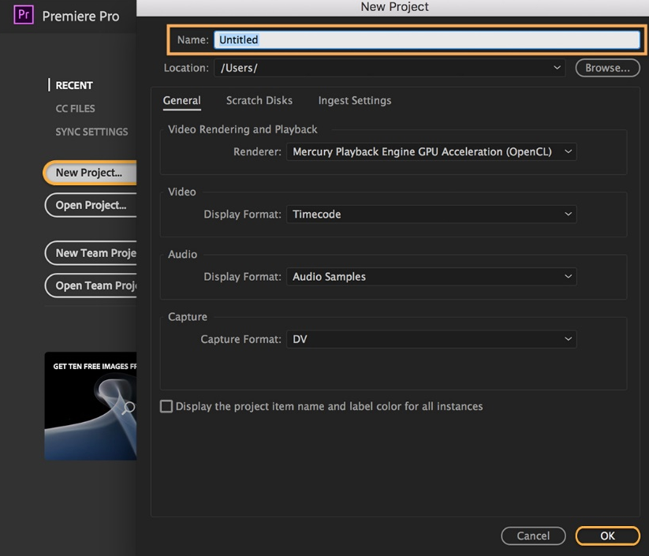
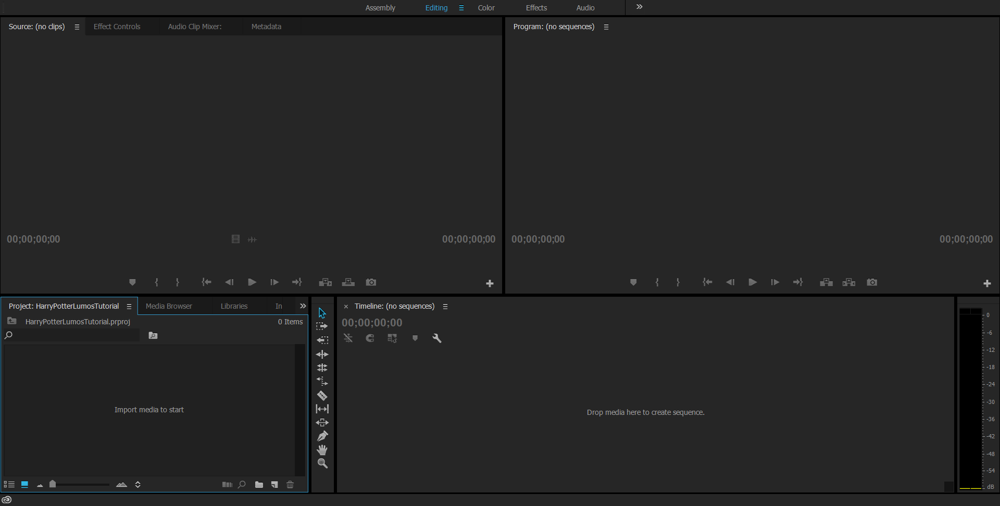
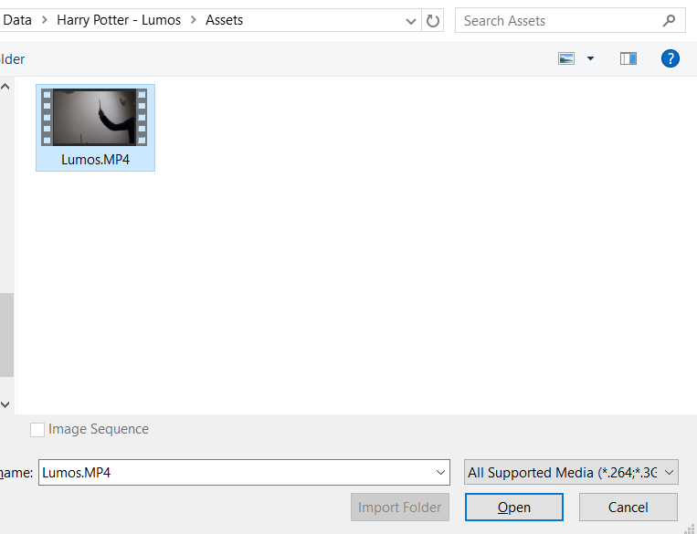
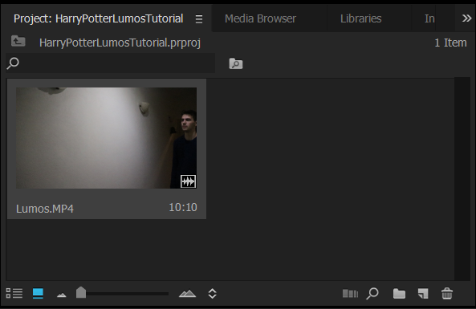
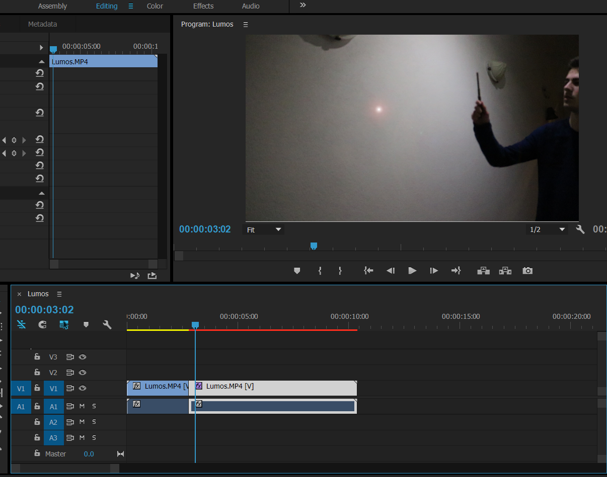

How to make your own Harry Potter effects
Description
In this craft section you will learn how to make the Harry Potter effect 'Lumos'.
Supplies
Instructions
Set-up
1. Open Premier Pro
2. Go to File > New > Project

3. In the New Project dialog box, name your project and click Browse to choose where you want
to save it.
It’s best to leave the remaining settings as they are.
Click OK when you’re done.
If everything went well, the Premiere Pro workspace should pop up.

Now we will import our video. This can be a video of you holding a wand, stick or pen.
4. Go to File > Import
Your File Explorer should pop up. From there, select the video of you holding a wand, stick or pen.

5. Click OK when you’re done.
You should be able to see the video you imported in the project window.
If this window is not open for you, go to Window > Project or hold down Shift + 1 for Windows
and Mac.

Now that we have our video we are going to put it on our timeline.
6. Click on the video and drag it onto the timeline.
If the timeline is not open for you, go to Window > Timelines or hold down Shift + 3 for Windows and
Mac.

For our next step, we are going to cut the video in half. We want to cut the video in half exactly
on the frame
where we are about to lit the wand with a light.
7. Move to the frame described in the text above.
8. Cut the video in half. You can do so by hitting Ctrl + K on Windows and Cmd +
K on Mac.

Next up, we are going to add a lens flare effect.
Make sure you have the ‘Effects’ window open.
To open it go to Window > Effects or hold down Shift + 7 for Windows and Mac.
9. Click in the search bar of the ‘Effects’ panel.
10. Type ‘Lens Flare’
11. Drag the Lens Flare effect onto your second clip.

The Lens Flare will be visible on your screen if you have the blue timeline cursor set on the second
clip.

The Lens Flare will be presenting as the light on our wand so we need to place it on the very top of
the wand you are holding.
In order to do that, take a look at the ‘Effect Controls’ window.
To open it, go to Window > Effect Controls or hold down Shift + F5 for Windows and Mac.
This is what you should see.

In this panel we can adjust the properties/attributes of the Lens Flare.
12. Click on the small stopwatch icon of ‘Flare Brightness’, ‘Flare Center’ and ‘Blend With
Original’.
The icons should turn blue.
13. Up the percentage of ‘Blend With Original’ to around 60% to get a better view where you
are going to place the flare.
Firstly, we want the Lens Flare to be positioned correctly.
14. Select the Lens Flare effect in the ‘Effect Controls’ panel.
15. Now move the Lens Flare by dragging it inside the ‘Program’ panel.

You can zoom in to be more precise with the positioning of the flare.

16. We want the Lens Flare to increase in light intensity after we flicked the wand.
In other words, when we flick with our wand like so:

17. Move about half a second forward in frames.
18. Increase the value of the ‘Flare Brightness’ to 100%.
Now go back to the start of the second clip where you just flicked your wand.
19. From there, position the flare on top of the wand for every frame for the rest of
the clip until you are satisfied.
The end result should look like this: